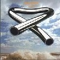
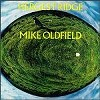

strange music page
progressive rock * * * mike oldfield
#Mike Oldfieldです、初期三枚はめちゃ好きです。
最近のチューブラーベルズ乱発はどーかと思うけど。
でとりあえず最初の三枚で話を進めると、三枚のイメージは
TUBLAR BELLS = 硝子細工
HARGEST RIDGE = 盆栽
OMMADAWN = 石仏
...なんかけなしてるみたいですけど、そんな事無いです(よくミもフタも無いこと書いて怒られる)
一番好きなのは三枚目です、ほんとに好き。
他のアルバムも結構買ったけどあんまり聴いてないかも....アマロックは好きです。
|
- Tubular Bells (1973)
- Hargest Ridge (1974)
- Ommadawn (1975)
- Incatations (1978)
- Exposed (1979)
- Platinum (1979)
- Q.E.2 (1980)
- Five Miles Out (1982)
- Crises (1983)
- Discovery (1984)
- Islands (1987)
- Earth Moving (1989)
- Amarok (1990)
- Heaven's Open (1991)
- Tubular Bells II (1992)
- 遥かなる地球の歌 (1994)
- Voyager (1996)
- Tubular Bells III (1998)
- Guitars (1999)
- The Millennium Bell (1999)
- Tres Lunas (2002)
|
#VIRGINレコードの一枚目、エクソシストに使われていた曲としてフツーの人にも結構有名(かもしれない)デビューアルバムです。ほとんどすべての楽器を一人で演奏して2300回のダビングを重ねて完成されたアルバムらしいです。
繊細で緻密で内向的で綺麗なアルバムです。ヒトリアソビの研ぎ澄まされた世界ですね。

- TUBULAR BELLS part 1
- TUBULAR BELLS part 2
produced by Mike Oldfield,Simon Heworth,Tom Newman
- Mike Oldfield
- Jon Field (flute)
- Lindsay Cooper (string bass)
- Mundy Ellis (chorus)
- Sally Oldfield (chorus)
- Steve Broughton (drums)
VIRGIN JAPAN: VJD-23001 (original release 1973 - VIRGIN RECORDS)
#これも結構好きでした。初期三作はどれも好きなんですけど、その中ではちょっと野暮ったいというかのんびりしたイメージの作品ですけど。

- HARGEST RIDGE part 1
- HARGEST RIDGE part 2
produced by Mike Oldfield,Tom Newman
- Mike Oldfield (all instruments)
- June Whiting (oboe)
- Lindsay Cooper (oboe)
- Ted Hobart (trumpet)
- Chili Charles (snare drums)
- Glodagh Simmonds (voice)
- Sally Oldfield (voice)
- David Bedford (conduct)
VIRGIN JAPAN: VJD-23002 (original release 1974 - VIRGIN RECORDS)
#M.Oldfield関係で一番好きなアルバムです。前作、前々作の方法を踏襲したアルバムではあるんですけど、何かちょっとスピリチュアルなモノを感じます。
スピリチュアルなんて書いちゃうとなんだか訳わかんないんですけど、メインテーマのコーラスの所でこのアルバムは非常に
ググッと来るものがあります。最初の二枚もかなり好きなんですけど、やっぱり(自分にとっては)このアルバムだけ別格。

- OMMADAWN part 1
- OMMADAWN part 2
- Mike Oldfield
- Sally Oldfield (chorus)
- Pierre Moerlan (drums)
- Bridgett St.John (chorus)
- David Strange (cello)
- Morris Pert (percussions)
- Herbie (pips)
- Julian Pola (chorus)
東芝EMI: 32VD-1110 (original release 1975 - VIRGIN RECORDS)
#えーとこれはLP2枚組で全一曲というすげーアルバムです。前作のオマドーンから3年の時間をおいて発表されたアルバムです。方法は初期三枚の延長上だとは思うのですが.....なんだか急に洗練されたようなポジティブな音になっています。
別に暗いのが好きなわけでは無いんですけど、どうもこの急に吹っ切れたような雰囲気がなんだか気持ち悪くて、あまり好きになれずにいます。どーも初期三枚の鬱々とした性格から編み出されたよーな偏執的な音に魅力を感じてたみたいで。
- INCANTATIONS part 1
- INCANTATIONS part 2
- INCANTATIONS part 3
- INCANTATIONS part 4
produced by Mike Oldfield
- Mike Oldfield (all instruments)
- Mike Laird (drums)
- Pierre Moerlin (drums,vibraphone)
- Maddy Prior (vocals)
- Sally Oldfield (vocals)
- David Bedford (condact)
- Sebastian Bell (flute)
- Terry Oldfield (flute)
- Jabula (african drums)
VIRGIN JAPAN: VJD-23005 (original release 1978 - VIRGIN RECORDS)
#えーと'83のアルバム。M.Reillyの歌う"Moonlight Shadow"がイイ曲です。良くも悪くもコンパクトにポップにまとまってます。
- Crises
- Moonlight Shadow
- In High Places
- Foreign Affair
- Taurus 3
- Shadow On The Wall
- Mike Oldfield (vocals,guitars,bass,fairlight,keyboards,percussions)
- Simon Phillips (drums)
- Phil Spalding (bass on 1.2.)
- Jon Anderson (vocals on 3.)
- Maggie Reilly (vocals on 2.4.)
- Roger Chapman (vocals on 6.)
- Ant (guitars on 1.6.)
- Pierre Moerlen (vibraphone on 3.)
VIRGIN JAPAN: VJD-23009 (original release 1983 - VIRGIN RECORDS)
#アーサー C.クラークの小説からインスパイアされたアルバムらしいです。全体的にちょっとテクノ/アンビエントっぽいですが、結局この人の音は形変えてもすぐ分かります。テーマがテーマなだけに何か広がりの有るイメージを持った音ですね、でもちょっとタイクツさも感じました。
- In The Beginning
- Let There Be Light (光あれ)
- Supernova
- Magellan
- First Landing (最初の着陸)
- Oceania
- Only Time Will Tell (時のみぞ知る)
- Prayer For The Earth
- Lament For Atlantis (アトランティスへの哀歌)
- The Chamber
- Hibernaculum
- Tubular World
- The Shining Ones (輝けるもの)
- Crystal Clear
- The Sunken Forest (水に沈んだ森)
- Ascension (昇天)
- A New Beginning
WARNER MUSIC JAPAN: WPCR-125 (1994.12.21)